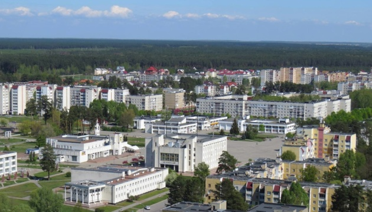
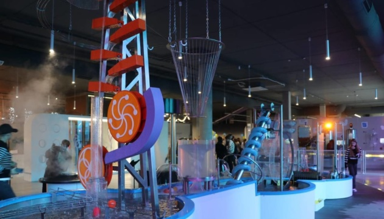

Choose a language to view the page:
|
У Славутичі збудують Північно-український ядерний науковий хаб, для розвитку наукової та бізнес складової атомної, а також пошук рішень для розбудови зеленої енергетики в країні. Його мета – створити умови для розвитку наукової та бізнес складової атомної, а також пошук рішень для розбудови зеленої енергетики в Україні Хаб дозволить об’єднати зусилля науково-дослідних інститутів, освітніх установ та енергетичних компаній у створенні нових проєктів атомних електростанцій, розв’язання проблем безпеки їхньої експлуатації, розвиток суміжної інфраструктури. Крім того, будівництво такого центру сприятиме розвитку Чорнобильської АЕС, пошуку шляхів подальшого застосування відчужених територій, розвитку зеленої енергетики на базі закритої електростанції, а також розглядати проєкти зі збереження та утилізації ядерних відходів, які утворюються в результаті роботи українських атомних станцій. |
 |
|
У Львові відкрився Музей науки, в якому зібрано близько 100 інтерактивних експонатів. «Поринути у світ науки, дізнатись в інтерактивній формі про явища природи та закони фізики, поспілкуватися з роботом – для дітей у Львові запрацював Музей науки. Простір вміщує близько 100 цікавих експонатів, з якими можна взаємодіяти й таким чином дізнаватись нове про навколишній світ – воду, повітря, оптику, акустику, електрику», - написав у своєму Телеграмі начальник Львівської ОВА Максим Козицький. Музей науки розміщений на 2200 кв.м площі та поділений на тематичні зони – розділи води, повітря, людини, оптики, науки, акустики, електрики, роботів та Формули-1 і VR. Окрім того, у закладі є лабораторія, зона акустики з музичними інструментами, що схожа на студію звукозапису. У секції з роботами можна провести цікавий діалог з RoboThespian, який відповідає на питання, виконує завдання заспівати пісню чи станцювати. Там також є роборука KUKA, якою збирають машини та інші прилади на промислових підприємствах. |
 |